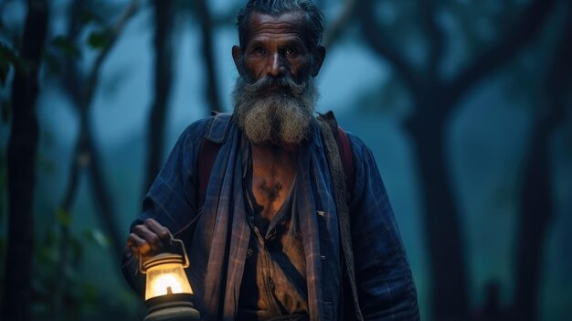

Tú y Valentin os acercáis al cuervo, que de repente se transforma en un anciano sabio. Él os cuenta la historia del Bosque Encantado y os da un mapa que conduce a un lugar secreto donde crecen plantas curativas muy raras. Juntos, recolectáis algunas de estas plantas y regresáis a casa, usando sus propiedades para ayudar a las personas necesitadas.
El Misterio del Bosque Encantado
